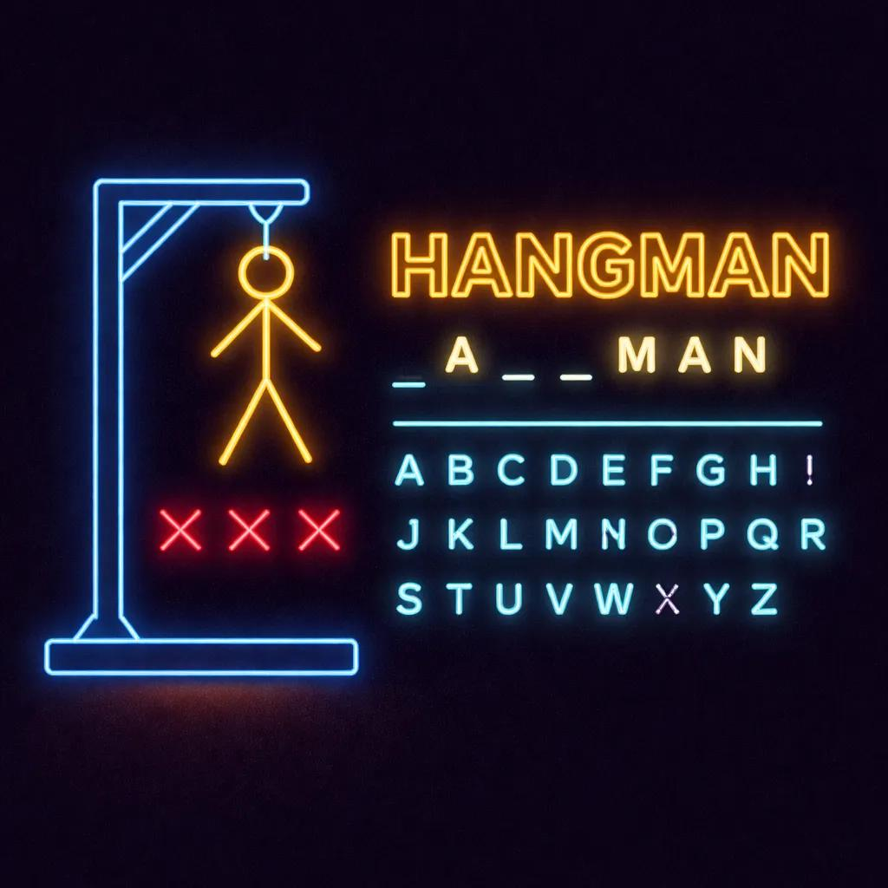

PROJET 01
HANGMAN PYTHON
Développement d'un jeu du pendu avec Python et Pygame.
Le projet comprend une interface graphique, un système de tentatives et différentes fonctionnalités de jeu.
Technologies utilisées
Python
Pygame
Statut : Projet scolaire